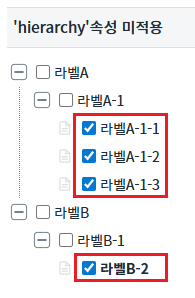
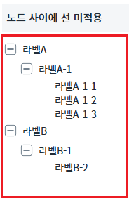
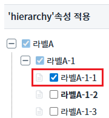
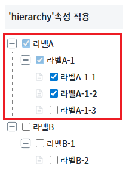
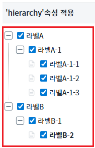
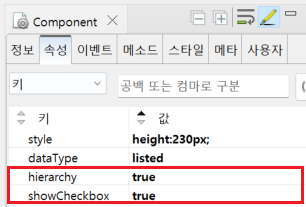

Treeview의 'hierarchy' 속성을 사용하여 하위 노드가 선택되었을 때, 상위 노드를 체크하는 예제입니다.
'hierarchy'속성 미적용
'hierarchy'속성 적용
1
STEP 1: 예제영역 ''hierarchy'속성 미적용'에서 가장 하위에 있는 노드들의 체크박스를 클릭합니다.
Image 1.브라우저(Chrome) 실행 예시

2
STEP 2: 하위의 노드들의 체크박스를 클릭하더라도 상위 노드의 체크박스는 체크가 되지 않는 것을 확인합니다.
Image 2.브라우저(Chrome) 실행 예시

1
STEP 1: 예제영역 ''hierarchy'속성 적용'에서 가장 하위에 있는 노드들의 체크박스를 클릭합니다.
Image 3.브라우저(Chrome) 실행 예시

2
STEP 2: 하위의 노드들의 하나씩 체크하면 다음과 같이 상위노드의 체크박스가 투명하게 체크되는 것을 확인합니다.
Image 4.브라우저(Chrome) 실행 예시

3
STEP 3: 하위의 노드들을 전부 체크하면 상위 노드가 체크되는 것을 확인합니다.
Image 5.브라우저(Chrome) 실행 예시

1
Treeview의 속성을 정의합니다.
[필수] hierarchy="true"
(옵션 설명)
하위 노드가 선택되었을 때, 상위 노드를 체크할지 여부.
하위 노드 중 체크되지 않은 항목이 있는 경우, 상위 노드의 체크박스를 반투명하게 표시하며 showCheckbox 속성이 true일 경우 적용된다.
[필수] showCheckbox="true"
(옵션 설명)
노드에 checkbox의 표시 여부.
Image 6.웹스퀘어 스튜디오의 Component View 예시

Example 1.Source
<!-- Treeview 의 소스 본문 예시 --> <w2:treeview hierarchy="true" showCheckbox="true"> <!-- 중략 --> </w2:treeview>
hierarchy
showCheckbox